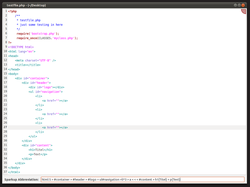

Scribes
Dieser Artikel wurde für die folgenden Ubuntu-Versionen getestet:
Ubuntu 14.04 Trusty Tahr
Zum Verständnis dieses Artikels sind folgende Seiten hilfreich:
Scribes  ist ein sehr ausgereifter, optisch minimalistischer Editor für GNOME. Unter der Haube verbergen sich allerdings eine Menge Funktionen, die Scribes zu einem guten Ersatz für gedit machen.
ist ein sehr ausgereifter, optisch minimalistischer Editor für GNOME. Unter der Haube verbergen sich allerdings eine Menge Funktionen, die Scribes zu einem guten Ersatz für gedit machen.
Der Editor zeichnet sich besonders dadurch aus, dass er auf reine Tastaturbedienung optimiert ist. Außerdem lassen sich mit ihm sehr einfach auch große Projekte (trotz mangelnder Tabs) verwalten. Das Programm bietet Vorlagen und Syntaxhervorhebung für viele Sprachen und beschleunigt die Eingabe durch intelligente Autovervollständigung. Für weitere Features empfiehlt sich ein Blick auf die Liste der Tastenkürzel.
Installation¶
Scribes kann bis einschließlich Ubuntu 14.04 aus den offiziellen Paketquellen installiert werden [1]:
scribes (universe)
 mit apturl
mit apturl
Paketliste zum Kopieren:
sudo apt-get install scribes
sudo aptitude install scribes
Bedienung¶

Scribes erreicht man bei Ubuntu-Varianten mit einem Anwendungsmenü über "Zubehör -> Scribes Texteditor" [2]. Scribes ist größtenteils wie ein normaler Editor zu bedienen. Jedoch verfügt er über eine nützliche Vorlagenfunktion, Sparkup-Integration und viele nützliche Tastenkürzel. Ohne Tastenkürzel erreicht man das Menü, wenn man mit der Maus über die farbig markierte Ecke fährt ("hot corner").
Scribes setzt auf so genannte spatial navigation, also auf Navigation per Tastatur. Die unten angegebene Liste der Tastenkürzel erhält man auch im Programm selbst durch die Kombination Strg + H . Um das volle Potential des Editors auszuschöpfen, sollte man sich über die Zeit Kombinationen für häufige Aktionen einprägen.
Dateiverwaltung¶
Rein statistisch betrachtet waren die meisten Dateien, die man bearbeiten will, zu einem vorherigen Zeitpunkt schon einmal geöffnet. Daher ist eine der wichtigsten Kombinationen Strg + Alt + R für die Liste der zuletzt geöffneten Dateien ("recent"). In dieser Liste kann man - wie überall in Scribes - durch einfach Lostippen suchen. Ein weiteres interessantes Kürzel ist Strg + Alt + O für "Schnelles Öffnen". In diesem Dialog wird das aktuelle Verzeichnis als Suchpfad benutzt. So findet man ohne langes Navigieren Dateien, die tief in der Verzeichnisstruktur des Projektes verborgen sind. Man kann natürlich auch einfach Strg + O drücken, um GNOMEs Standard-Dialog zum Öffnen von Dateien anzuzeigen.
Keine Tabs¶
Der Verzicht auf Tabs ist eine Designentscheidung des Entwicklers. Kurz gesagt bezweifelt er, dass Tabs bei einem Texteditor tatsächlich einen Gewinn in der Benutzbarkeit bringen. Mit Scribes lassen sich tatsächlich auch ohne Tabs viele geöffnete Dateien gut verwalten, vielleicht sogar effizienter als mit Tabs.
Mit F9 lassen sich alle offenen Dokumente anzeigen und durchsuchen. Diese können – im Gegensatz zu anderen Editoren – auch auf unterschiedlichen Desktops liegen. So kann man seine Dokumente kontextbezogen auf mehrere Desktops verteilen und hat trotzdem schnellen Zugriff.
Vorlagen¶
Mit Alt + F12 öffnet man den Vorlageneditor. Jetzt wählt man links die Programmiersprache aus, für die die Vorlage genutzt werden soll. Jetzt kann man bereits bestehende Vorlagen ändern, löschen oder neue hinzufügen. Nachdem man Namen (mit dem man das Template später aufruft) und Beschreibung eingegeben hat, gehts an die Vorlage: Man tippt $ ein und es wird ein ${placeholder} daraus. Beispielsweise folgendes Template:
${Das} hier ist ${ein Test}.Der Inhalt in den Klammern ist der Standardwert. Wenn man diese Vorlage jetzt unter bsptemplate für die Sprache Python gespeichert hat, dann in einem Pythonskript bsptemplate eintippt und dann
Tab ⇆ drückt, wird der Cursor in Das gesetzt und man kann den Wert anpassen. Man geht zum nächsten Vorlagenwert mit der Tabtaste (siehe Videos ).
Sparkup¶
Sparkup vereinfacht das Eingeben von HTML und CSS. Es ist eine Weiterentwicklung von Zen Coding (inzwischen Emmet ), welches ebenfalls von Scribes unterstützt wird. Da Sparkup in Scribes besser integriert ist und einige Vorteile hat, sollte man es "Zen Coding" vorziehen. Beispiele für die Nutzung gibt es auf der Zen-Coding-Seite zu genüge.
Man aktiviert Sparkup mit Strg + E und gibt CSS-ähnliche Formatierungen ein, um daraus HTML zu erzeugen. Aus
#content.class > .test
wird so
1 2 3 | <div class="class" id="content"> <div class="test"></div> </div> |
Mit etwas komplexeren Ausdrücken kann man das komplette Grundgerüst einer Seite generieren (s. Screenshot):
html:xs > #container > #header > #logo + ul#nav > li*3 > a < < < #content > h1{Seitentitel} + p{Seitentext}Befehlsfilter¶
Diese Funktion ist durch die "Filter-Through-Command"-Funktion im Mac-Editor TextMate inspiriert. Man markiert einfach Text, drückt
Alt +
X und gibt einen Linux-Befehl ein. Der Befehl bekommt den Text als Eingabe und die Ausgabe landet wieder im Editor. So kann man bspw. das Kommando sort benutzen, um Textzeilen alphabetisch zu sortieren.
Tastenkürzel¶
Um Scribes komfortabler zu nutzen, existieren einige Tastenkürzel. Hier eine Übersicht:
| Dateien | |||
| Tastenkürzel bezüglich des Dateiöffnens, -speicherns usw. | |||
| Strg + O | Öffnet eine existierende Datei | Strg + Alt + O | Schnell-Öffnen-Dialog |
| Strg + Alt + R | Zuvor geöffnete Dateien durchsuchen | Strg + S | Speichert die aktuelle Datei |
| Strg + ⇧ + S | Datei umbenennen | Strg + P | Druckt aktuelle Datei |
| Strg + N | Startet neue Datei | ||
| Lesezeichen | |||
| Mit Lesezeichen kann man bestimmte Zeilen hervorheben und dann wieder in diese Zeile per Aufruf springen. | |||
| Strg + B | Zeigt den Lesezeichen-Browser | Strg + D | Lesezeichen setzen/entfernen |
| Strg + Alt + B | Löscht alle Lesezeichen | ||
| Zeilen-Operationen | |||
| Tastenkürzel, die sich auf die aktuelle oder markierte Zeilen auswirken | |||
| Alt + 1 | Zeilenende in Unix-Format | Alt + 2 | Zeilenende in Mac-Format |
| Alt + 3 | Zeilenende in Windows-Format | Alt + → | Zeile einrücken |
| Alt + ← | Zeile ausrücken | Alt + D | Zeile löschen |
| Strg + U | Zeile verdoppeln | Alt + C | Kommentar umschalten |
| Alt + O | leere Zeile unterhalb | Alt + ⇧ + O | leere Zeile oberhalb |
| Navigation | |||
| Tastenkürzel, die beim Navigieren im Text helfen | |||
| Alt + M | vertikal zentrieren | Alt + ⇧ + ← | links scrollen |
| Alt + ⇧ + → | rechts scrollen | Alt + ⇧ + B | zu zugehöriger Klammer springen |
| Strg + ↓ | nächster Absatz | Strg + ↑ | vorhergehender Absatz |
| Strg + F | Suchleiste | Strg + R | Suchen und Ersetzen |
| Strg + I | Zu Zeilennummer springen | Strg + G | nächstes Suchergebnis |
| Strg + ⇧ + G | vorhergehendes Suchergebnis | ||
| Auswahl | |||
| Alt + B | Klammernauswahl | Alt + L | Zeile auswählen |
| Alt + P | Absatz auswählen | Alt + S | Satz auswählen |
| Alt + W | Wort auswählen | ||
| Textformatierung | |||
| Alt + Q | Textfluss neu berechnen | Alt + R | anhängende Leerzeichen löschen |
| Alt + T | Leerzeichen in Tabs | Alt + ⇧ + T | Tabs in Leerzeichen |
| Strg + Z | Rückgängig | Strg + Y | Wiederholen |
| Strg + ⇧ + E | escape quotes | Strg + Alt + E | unescape quotes |
| Fensterverwaltung | |||
| F9 | Zeige alle offenen Fenster | Strg + H | Zeige Tastenkürzel |
| Strg + N | neues Fenster | Strg + ⇧ + N | leeres Dokument in aktuellem Fenster |
| Strg + Bild ↓ | nächstes Fenster | Strg + Bild ↑ | voriges Fenster |
| Sonstige | |||
| Strg + E | zeige Sparkup-Interface | Alt + X | Befehlsfilter |
| Alt + ⏎ | Statistik | Alt + . | Leerräume anzeigen (Leerzeichen, Tabs, Return, usw)) |
| Alt + F12 | Vorlagen-Editor | Alt + ⇧ + F12 | Theme-Auswahl |
| Strg + ⇧ + Alt + C | Autovervollständigung umschalten | F1 | Hilfe |
| F12 | Einstellungen | F3 | Dokument read-only setzen |
Problembehebung¶
Fensterfokus mit Compiz¶
Wenn man Compiz verwendet, dann leidet man u.U. unter einer merkwürdigen Voreinstellung von Ubuntu. Diese Einstellung verhindert es, dass startende Programme den Fokus erhalten. Diese Einstellung verhindert leider auch, dass einige Fenster von Scribes den Fokus erhalten, so dass die Tastaturbedienung nicht reibungslos funktioniert. Der folgende Befehl behebt das Problem:
gconftool-2 -s -t int /apps/compiz/general/screen0/options/focus_prevention_level 0
Anpassen der Druckausgabe¶
Ein Einstellungsdialog für die Kopf- und Fußzeile, die Syntaxhervorhebung und die automatische Zeilennummerierung der Druckausgabe ist nicht vorhanden. Möchte man diese anpassen oder ganz abschalten, dann profitiert man davon, dass dieses Programm in Python entwickelt wurde und man die entsprechende Quelldatei /usr/lib/scribes/GenericPlugins/Printing/Utils.py mit sudo und einem Texteditor direkt bearbeiten kann. Änderungen an dieser Datei werden allerdings bei einer Aktualisierung des Pakets überschrieben. Hier ein kommentierter Auszug der relevanten Zeilen:
1 2 3 4 5 6 7 8 9 10 11 12 | # Fußzeile an/aus compositor.set_print_footer(True) # Formatierung der Fußzeile compositor.set_footer_format(True, "", editor.filename, "%N of %Q") # Kopfzeile an/aus compositor.set_print_header(True) # Formatierung der Kopfzeile compositor.set_header_format(True, editor.name, "%b %d, %Y", "%N/%Q") # Syntaxhervorhebung an/aus compositor.set_highlight_syntax(True) # Zeilennummern an/aus compositor.set_print_line_numbers(1) |
Die Formatierung der Kopf- und Fußzeile besteht aus einer mit Kommata getrennten Liste: Status, Inhalt Links, Inhalt Mitte, Inhalt Rechts. editor.filename steht für den Dateinamen mit vollständigem Pfad, editor.name für den Dateinamen ohne Pfad, die Variabeln %N für Seite sowie %Q für Seiten. Die Variabeln für den Zeitstempel entsprechen strftime  .
.
Links¶
Scribes
auf Launchpad
Scribes Keyboard Shortcuts
- weitere Übersicht der verfügbaren Tastenkürzel
- Erstellt mit Inyoka
-
 2004 – 2017 ubuntuusers.de • Einige Rechte vorbehalten
2004 – 2017 ubuntuusers.de • Einige Rechte vorbehalten
Lizenz • Kontakt • Datenschutz • Impressum • Serverstatus -
Serverhousing gespendet von